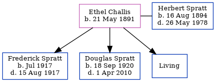

Ethel Lucy Spratt (née Challis) 1891 -
[ Home ] | [ Calendar ] | [ Surnames Index ] | [ Errors ] | [ Family History ]Ethel Challis, the wife of Herbert Jesse Spratt (the first cousin twice-removed on the father's side of Nigel Horne), was born in Ramsgate, Kent, England on 21 May 18911,2 and married Herbert (a hotel manager with whom she had 3 children: Frederick Charles, Douglas Norman and Laurence Herbert, along with 1 surviving child) at Registry Office, Blean, Kent, England on 28 Dec 19143.
During her life, she was living at Montefiore Place, Hereson Road, St Lawrence, Thanet, Kent on 31 Mar 19014 - less than a mile from her future husband Herbert Spratt who was living at 44 Addington Street in Ramsgate; and at 2 Sutherland Road, Deal, Kent on 29 Sept 19391.
Children
- Frederick Charles was born in Jul 1917
- Douglas Norman was born on 18 Sept 1920
Citations
- 1939 Register - Findmypast (was the wife of the head of the household)
- England & Wales births 1837-2006 - Findmypast
- England & Wales Marriages 1837-2005 - Findmypast
- 1901 England, Wales & Scotland Census - Findmypast (was age 9 and the daughter of the head of the household)
Media
Herbert Spratt - Ethel Challis - marriage

Whitstable Times and Herne Bay Herald

1939 Register Transcription - TNA-R39-1703-1703C-031-11
England & Wales marriages 1837-2005 - BMD/M/1914/4/AZ/000192/099
England & Wales births 1837-2006 - BMD/B/1891/2/AZ/000106/166
1939 Register Transcription - TNA-R39-1703-1703C-031-12
1901 England, Wales & Scotland Census - GBC/1901/0007449607
Family Tree
Map
Generated by ged2site. Last updated on Jul 3, 2024